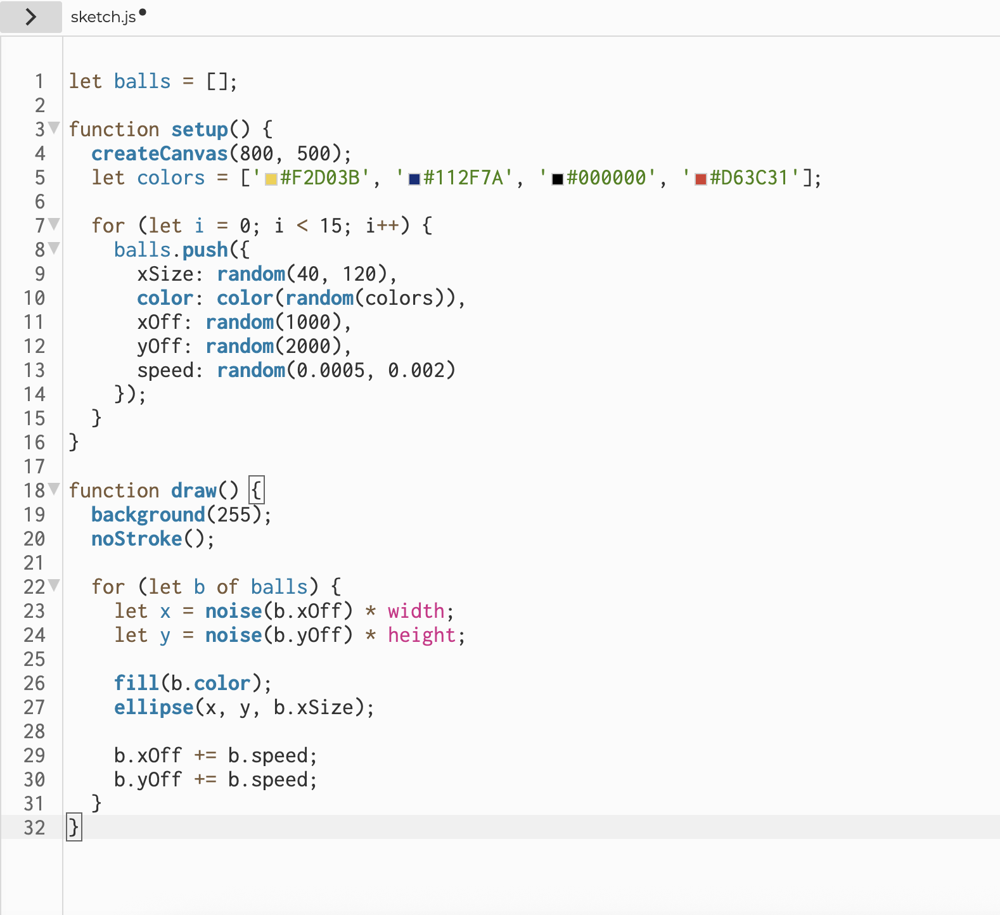

When I first created my bouncing ball animation, I encountered an issue where the ball would flicker and leave trails across the canvas instead of moving smoothly. I was trying to create a simple animation where a circle bounces off the edges of the canvas, but the visual result was chaotic and unpredictable. After examining my code, I realized that I had forgotten to include the background() function inside my draw() loop. This was particularly interesting because it helped me understand the fundamental difference between setup() and draw() functions in p5.js, and how the canvas rendering system works frame by frame.The Solution: To solve this problem, I added background(220); as the first line inside my draw() function. This ensures that the canvas is cleared and redrawn with a fresh background color on every frame, preventing the "trail" effect. I learned that the draw() function runs continuously (typically 60 times per second), and without clearing the previous frame, all the drawings accumulate on top of each other.
